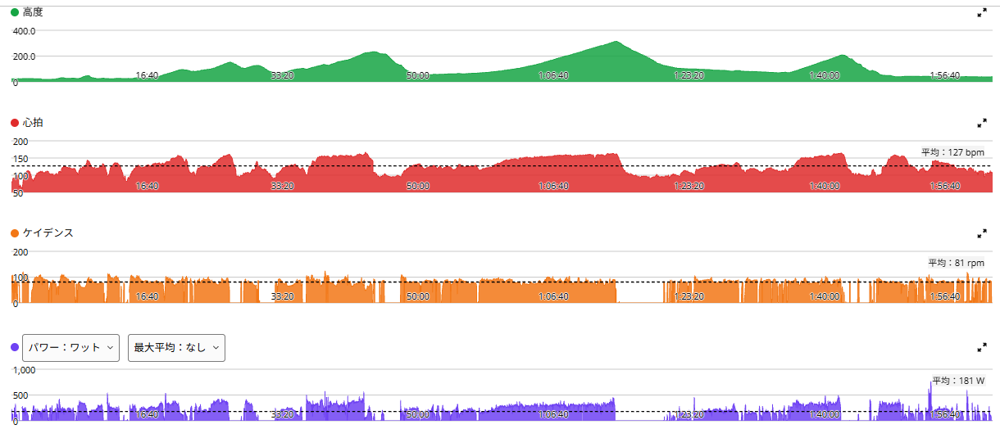
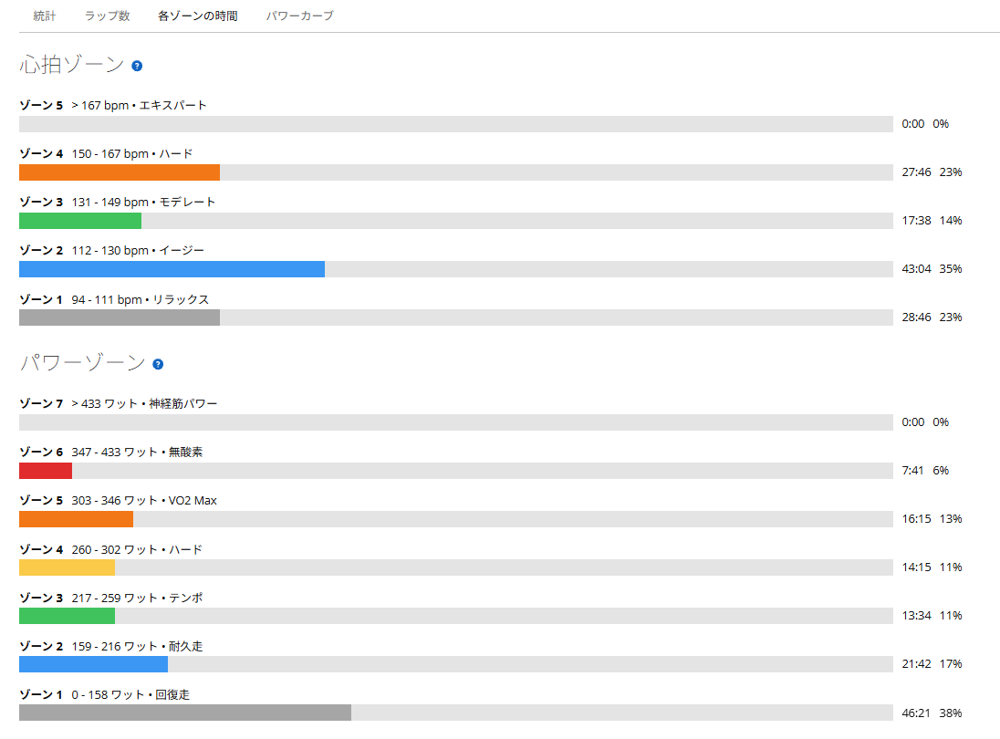

体調はいいのに踏めない？ 太平・琴平・唐沢で数字と感覚が食い違った日
今日はいつもの太平→琴平→唐沢へ。このコースは私の定番で、特に別の場所へ行ったと言わない限り、だいたいここを走っている。AIにもようやく覚えてもらった。毎回「どのコースでしたか？」と聞かれても、さすがに私の走る山はそうそう増えない。
水曜日は唐沢で5分走を5本、木曜日はローラーで220Wを60分。今日はその翌日だ。連日の練習ではあるけれど、脚に疲労が残っている感じはない。むしろ身体の調子は良い。ところが走り始めると、妙に「思ったほど踏めない」という感覚があった。体調はいい。脚も重くない。でも、出力を上げると苦しい。さて、実際の数字はどうだったのか。

約51km・NP245W・TSS145
- 全体51.47km / 2時間00分39秒 / 獲得817m / 平均気温16.5℃
- 負荷平均181W / NP245W / IF0.849 / TSS144.5 / FTP設定289W
- 心拍・回転平均127bpm / 最大167bpm / 平均81rpm

下りの時間が長いので平均パワーは181Wだが、NPは245W。登りではしっかり踏んで、下りでは休む、という実走らしいデータになっている。2時間でTSS144.5。これは決して軽い練習ではない。
3つの山の数字は、思ったより悪くない
| 区間 | 時間 | 平均パワー | 心拍平均 |
|---|---|---|---|
| 太平山 | 約7分 | 321W | 151bpm |
| 琴平峠 | 約15分 | 296W | 153bpm |
| 唐沢山 | 約6分 | 326W | 152bpm |
7分を321Wで登り、その後に約15分を296W、最後の唐沢山も約6分を326Wで走れている。あれ？ 思ったより踏めないと思っていた割に、ちゃんと出ている。身体の感覚とサイコンの数字が、どうにも噛み合わない日だった。
琴平峠296W。これはめっちゃきつかった
一番印象に残ったのは琴平峠。約15分、平均296W。FTP289Wに対して約102％で、数字だけでもそれなりの強度だが、体感は「めっちゃきつかった」の一言に尽きる。楽にこなせた登坂ではない。しっかり苦しんで、どうにか踏み切った。
富士ヒルのためには長い時間パワーを維持する力が必要だ。だから、5分前後の高出力だけでなく、こうした十数分の登坂が今の自分にどれくらいきついのかも大事な情報になる。ただ、ここがきつかったからといって、そこだけでFTPを決めつけることはできない。すでに太平山を踏んだ後だし、実走には勾配やペース変化もある。今日わかったのは、少なくともこの状況で296Wを約15分維持するのは、かなり厳しかったということだ。
疲れていないのに、踏めない不思議

脚に目立った疲労感はなかった。身体の調子も良いと思っていた。なのに、思うように踏めない。11日の唐沢5分走はTSS109.2、12日のローラーはTSS68.3、そして今日が144.5。3日間で合計322.0だ。疲れを自覚していないからといって、疲労がゼロとは限らない。
11月4日と比べると、少しずつ低い
| 日付 | 太平山 | 琴平峠 | 唐沢山 |
|---|---|---|---|
| 10月22日 | 330W | 301W | 329W |
| 11月4日 | 331W | 315W | 343W |
| 今日 | 321W | 296W | 326W |
言われてみれば、確かに少し低い。11月4日は回復走の翌日で、3つの山すべてで10月22日を上回っていた。それに比べると今日は、太平山で10W、琴平峠で19W、唐沢山で17W低い。とはいえ、太平山は7分前後、琴平は300W前後という自分なりの基準からは大きく外れていない。連日走ったせいでダメだった、と決めるほど数字は落ちていない。結局、「調子がいい」と「気持ちよく高出力が出る」は、いつも同じではないらしい。
心拍は水曜日と違う動き
水曜日の唐沢では、5分走をしているのに心拍が妙に上がらず、下りでも普段より早く落ちる感覚があった。今日は最大167bpmまで上がり、琴平峠では平均153bpm。水曜日よりも、強度に応じた心拍の動きが見られた。水曜日の平均気温は5.6℃、今日は16.5℃と、条件もかなり違う。心拍の違いが身体の変化なのか、気温などの条件によるものなのかは、まだわからない。あれこれ結論を急がず、今後の傾向を見ていくことにしている。
数字だけでも、感覚だけでも足りない
今日の走りを終えた感想は、少し複雑だ。「めちゃくちゃ調子が良くて、気持ちよく踏めた！」という日ではなかった。琴平峠は本当にきつかった。でも、データを見返すと3つの山はどれもいつもの水準に近い。最高の日ではないにしても、十分に負荷のある練習ができていた。
こういう日があるから、パワーメーターは面白い。気分だけなら「今日はあまり踏めなかった」で終わってしまう。でも数字を見れば、ちゃんとやることはやっている。逆に、数字が悪くなかったからといって、きつかったという自分の感覚を無視するのも違う。今のFTPは289W。目標はローラーで1時間300W、そして富士ヒルゴールド。今日のような登坂での苦しさも、積み重ねた数字も、両方を記録していきたい。
「思ったより踏めなかった」と言いながら、TSS144.5。AIに練習が緩くなりがちだと文句を言っていた私だが、今日は少なくとも緩い日ではなかったようだ。